Aula 9 - Firmas em Mercados Competitivos
01 - Por que a estrutura de mercado importa
02 - O significado da concorrência
03 - A receita de uma firma competitiva
04 - Receita total, média e marginal
05 - Um exemplo numérico de maximização do lucro
07 - A curva de custo marginal e a decisão de oferta
08 - Como a firma responde a uma mudança no preço
09 - A decisão de paralisar no curto prazo
10 - A regra de paralisação e a oferta de curto prazo
12 - Restaurantes vazios e minigolfe fora de temporada
13 - A decisão de sair ou entrar no mercado
14 - Curto prazo e longo prazo
15 - Medindo lucro e prejuízo no gráfico
16 - Oferta de mercado no curto prazo
17 - Entrada e saída no longo prazo
18 - Equilíbrio de longo prazo e escala eficiente
19 - Por que permanecer com lucro econômico zero?
20 - Aumento da demanda no curto prazo
21 - Ajuste da demanda no longo prazo
22 - Por que a oferta de longo prazo pode ser crescente?
Imagine dois fornecedores locais:
⛽ Um posto aumenta o preço da gasolina em 20%. Muitos consumidores podem comprar em outro posto.
🚰 A companhia de água aumenta sua tarifa em 20%. As famílias podem economizar, mas dificilmente encontram outro fornecedor.
A diferença está na estrutura de mercado. No primeiro caso, muitas firmas vendem um produto semelhante. No segundo, uma única firma atende o mercado.
Este capítulo investiga as decisões de produção das firmas competitivas e mostra o que existe por trás da curva de oferta.
As medidas de custo estudadas na aula anterior cumprem papéis diferentes:
\[ CF,\;CV,\;CMeV,\;CMeT\;\text{e}\;CMg \]
🔑 A questão central é identificar quais custos orientam a produção no curto prazo, a entrada ou saída no longo prazo e a oferta de mercado.
Um mercado competitivo, também chamado de mercado perfeitamente competitivo, apresenta duas características fundamentais:
Como cada participante representa uma parcela muito pequena do mercado, suas decisões individuais têm efeito desprezível sobre o preço.
\[ \boxed{\text{Compradores e vendedores são tomadores de preço}} \]
🥛 No mercado de leite, nenhum consumidor compra o suficiente para alterar o preço. Cada produtor também é pequeno diante da oferta total.
Se um produtor cobrar menos, renuncia receita sem necessidade. Se cobrar mais, os compradores procurarão os concorrentes.
Uma terceira condição costuma caracterizar a concorrência perfeita:
Essa condição não é necessária para que a firma seja tomadora de preço, mas é decisiva para o equilíbrio de longo prazo.
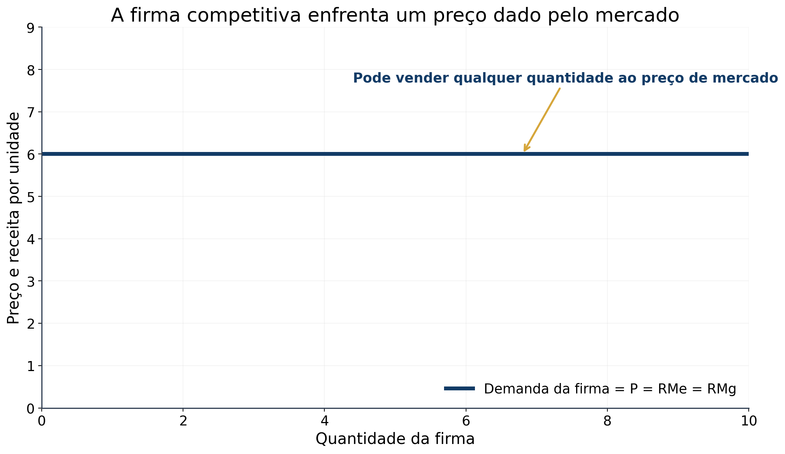
Considere uma pequena fazenda que produz leite. Ela vende a quantidade (Q) ao preço de mercado (P):
\[ \boxed{RT=P\times Q} \]
Se o preço é $6 por galão e a fazenda vende 1.000 galões:
\[ RT=6\times1.000=\$6.000 \]
Como a fazenda é pequena em relação ao mercado, produzir 2.000 galões não altera o preço. A receita total simplesmente dobra para $12.000.
Logo, para a firma competitiva:
\[ P\;\text{constante}\quad\Longrightarrow\quad RT\;\text{proporcional a}\;Q \]
A curva de demanda enfrentada pela firma é horizontal no preço de mercado. A firma pode escolher quanto produzir, mas não o preço pelo qual venderá.
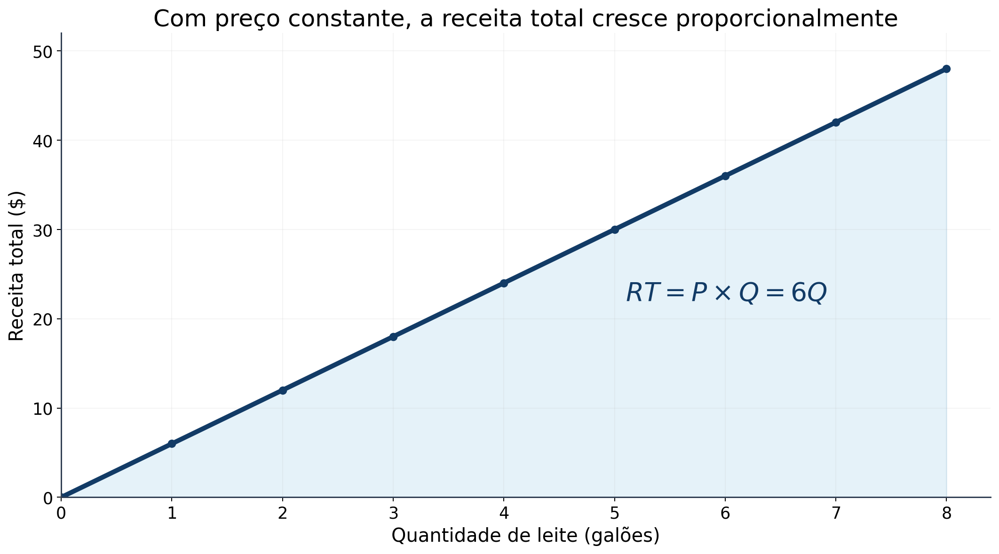
| Quantidade (Q) | Preço (P) | Receita total (RT) | Receita média (RMe=RT/Q) | Receita marginal (RMg=RT/Q) |
|---|---|---|---|---|
| 1 | $6 | $6 | $6 | $6 |
| 2 | $6 | $12 | $6 | $6 |
| 3 | $6 | $18 | $6 | $6 |
| 4 | $6 | $24 | $6 | $6 |
| 5 | $6 | $30 | $6 | $6 |
| 6 | $6 | $36 | $6 | $6 |
| 7 | $6 | $42 | $6 | $6 |
| 8 | $6 | $48 | $6 | $6 |
A receita média informa quanto a firma recebe pela unidade típica vendida:
\[ RMe=\frac{RT}{Q}=\frac{P\times Q}{Q}=P \]
Esse resultado vale para qualquer firma.
A receita marginal mede a variação da receita total causada pela venda de uma unidade adicional:
\[ RMg=\frac{\Delta RT}{\Delta Q} \]
Como o preço não muda quando a firma competitiva amplia sua produção:
\[ \boxed{P=RMe=RMg} \]
Uma firma competitiva vende cada unidade por $10.
O que acontece com o preço quando ela dobra a quantidade vendida?
O que acontece com sua receita total?
Quanto valem a receita média e a receita marginal?
Resposta esperada: o preço permanece em $10, a receita total dobra e (P=RMe=RMg=$10).
Retomemos a fazenda, com preço de $6 e custo fixo de $3.
| (Q) | (RT) | (CT) | Lucro (RT-CT) | (RMg) | (CMg) | (RMg-CMg) |
|---|---|---|---|---|---|---|
| 0 | $0 | $3 | -$3 | - | - | - |
| 1 | $6 | $5 | $1 | $6 | $2 | $4 |
| 2 | $12 | $8 | $4 | $6 | $3 | $3 |
| 3 | $18 | $12 | $6 | $6 | $4 | $2 |
| 4 | $24 | $17 | $7 | $6 | $5 | $1 |
| 5 | $30 | $23 | $7 | $6 | $6 | $0 |
| 6 | $36 | $30 | $6 | $6 | $7 | -$1 |
| 7 | $42 | $38 | $4 | $6 | $8 | -$2 |
| 8 | $48 | $47 | $1 | $6 | $9 | -$3 |
O lucro máximo é $7, obtido com 4 ou 5 galões. A análise marginal indica 5 galões, pois o quinto acrescenta receita e custo iguais.
Até o quinto galão, cada unidade acrescenta ao lucro ou não o reduz. A partir do sexto, o custo marginal supera a receita marginal e o lucro diminui.
Uma firma que busca maximizar lucro compara o ganho e o custo de cada unidade adicional.
Se:
\[ RMg>CMg \]
a receita da unidade adicional supera seu custo. A firma aumenta a produção.
Se:
\[ RMg<CMg \]
o custo da unidade adicional supera a receita. A firma reduz a produção.
Os ajustes terminam quando:
\[ \boxed{RMg=CMg} \]
Como, na concorrência perfeita, (RMg=P):
\[ \boxed{P=CMg} \]
Esse é o nível de produção que maximiza o lucro, desde que seja vantajoso manter a firma produzindo.
💡 A regra (RMg=CMg) vale também para firmas com poder de mercado. O que muda nos capítulos seguintes é a forma da receita marginal.
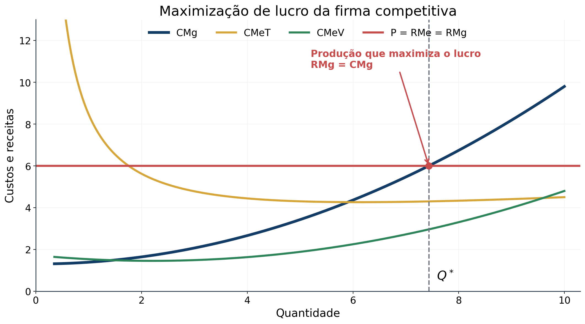
As curvas de custo apresentam as propriedades estudadas na aula anterior:
A linha horizontal representa o preço de mercado. Para a firma competitiva, ela também representa a receita média e a receita marginal.
Em uma quantidade menor que (Q^*), temos (RMg>CMg). Produzir mais eleva o lucro.
Em uma quantidade maior que (Q^*), temos (CMg>RMg). Produzir menos eleva o lucro.
Portanto, a firma converge para a quantidade em que o preço cruza a curva de custo marginal.
⚠️ A igualdade (P=CMg) determina quanto produzir se a firma operar. Ainda precisamos saber quando ela deve produzir zero.
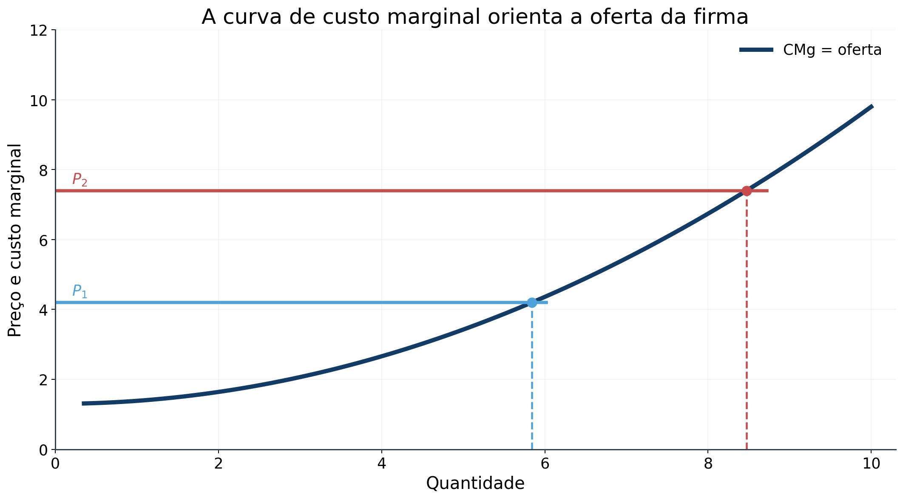
Quando o preço é (P_1), a firma escolhe (Q_1), onde:
\[ P_1=CMg(Q_1) \]
Se a demanda de mercado aumenta e o preço sobe para (P_2), a antiga produção passa a apresentar (RMg>CMg). A firma amplia a produção até (Q_2):
\[ P_2=CMg(Q_2) \]
Cada preço seleciona uma quantidade na curva de custo marginal. Por isso:
\[ \boxed{\text{A curva de CMg determina a quantidade ofertada pela firma}} \]
Essa conclusão precisa de duas qualificações:
Paralisação é a decisão de curto prazo de não produzir durante determinado período devido às condições atuais do mercado.
Saída é a decisão de longo prazo de abandonar definitivamente o mercado.
| Decisão | Receita perdida | Custos evitados | Custos ainda pagos |
|---|---|---|---|
| Paralisar | Toda a receita | Custos variáveis | Custos fixos |
| Sair | Toda a receita | Custos variáveis e fixos | Nenhum |
🌾 Se um agricultor não plantar durante uma safra, a terra fica ociosa e seu custo continua existindo. No curto prazo, esse custo é irrecuperável.
Se o agricultor abandonar a atividade e vender a terra, pode evitar esse custo no longo prazo.
A firma paralisa quando a receita obtida ao produzir não cobre os custos variáveis que a produção provoca.
\[ \boxed{\text{Paralisar se }RT<CV} \]
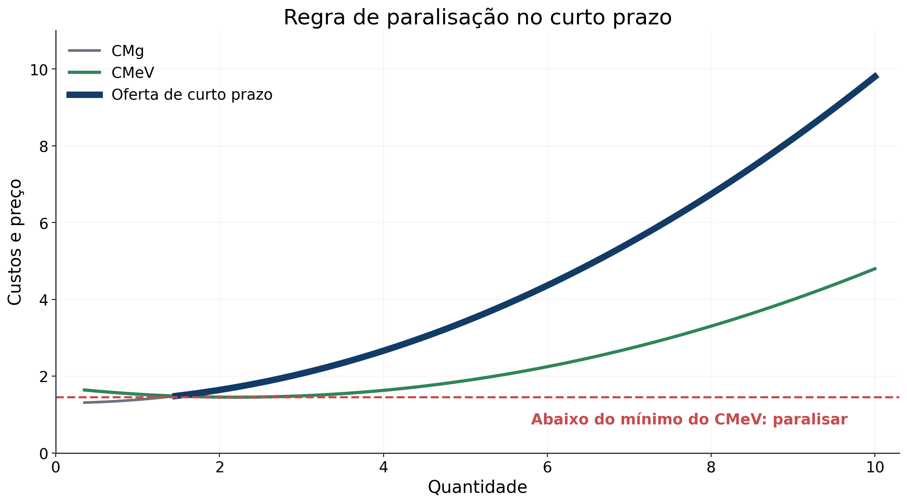
Partindo da condição:
\[ RT<CV \]
Dividimos os dois lados pela quantidade (Q):
\[ \frac{RT}{Q}<\frac{CV}{Q} \]
Como (RT/Q=P) e (CV/Q=CMeV):
\[ \boxed{\text{Paralisar se }P<CMeV} \]
Se o preço não cobre o custo variável médio, produzir aumenta o prejuízo. A firma prefere produzir zero e arcar apenas com o custo fixo.
Se (PCMeV), a receita cobre os custos variáveis e contribui para pagar parte do custo fixo. A firma opera onde (P=CMg), mesmo que apresente prejuízo.
Logo:
\[ \boxed{\text{Oferta de curto prazo}=\text{trecho do CMg acima do CMeV}} \]
Um custo irrecuperável é um custo já comprometido que não pode ser recuperado.
Como nenhuma decisão atual consegue alterá-lo, ele deve ser ignorado na escolha entre as alternativas disponíveis agora.
No curto prazo, os custos fixos da firma são irrecuperáveis. Eles não mudam se a produção for positiva ou igual a zero. Por isso, o tamanho do custo fixo não altera a decisão de oferta de curto prazo.
🎬 Exemplo do ingresso perdido
Você atribui benefício de $15 a um filme e compra um ingresso por $10. Antes de entrar, perde o ingresso.
O primeiro pagamento de $10 já ocorreu e não pode ser recuperado. A decisão atual compara:
\[ \text{benefício de assistir}=\$15 \]
com
\[ \text{custo de um novo ingresso}=\$10 \]
Como o benefício ainda supera o custo relevante, comprar outro ingresso é a decisão racional.
📌 Estudo de caso
Um restaurante quase vazio no almoço pode continuar aberto de modo racional.
Aluguel, equipamentos, mesas, pratos e talheres são custos fixos. Fechar no horário do almoço não elimina esses pagamentos.
Para decidir se abre, o proprietário compara a receita dos poucos clientes com os custos variáveis do período, como alimentos adicionais e salários da equipe necessária.
\[ \boxed{\text{Abrir se }RT\geq CV} \]
Um campo de minigolfe em uma região turística enfrenta a mesma escolha. A compra do terreno e a construção do campo já ocorreram. A operação deve continuar nas épocas em que a receita cobre os custos variáveis.
🔑 Poucos clientes não significam necessariamente que fechar reduz o prejuízo. O critério correto depende dos custos que a decisão consegue evitar.
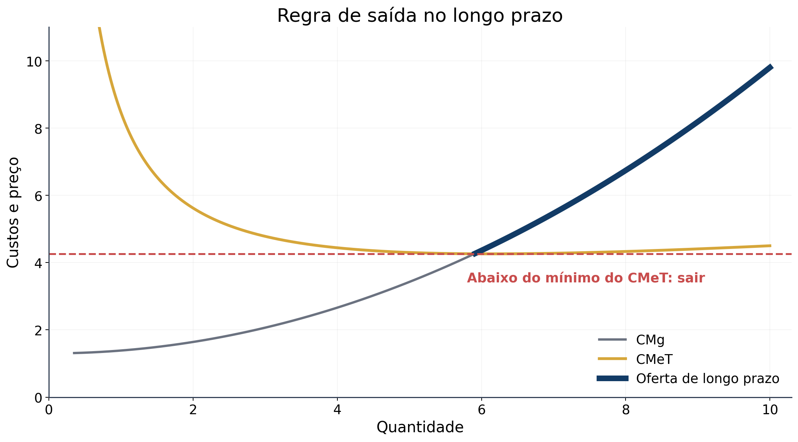
No longo prazo, a firma pode evitar custos fixos e variáveis. Ela sai quando a receita não cobre o custo total:
\[ RT<CT \]
Dividindo por (Q):
\[ \frac{RT}{Q}<\frac{CT}{Q} \]
Logo:
\[ \boxed{\text{Sair se }P<CMeT} \]
Para um empreendedor que considera iniciar uma firma, a regra é simétrica:
\[ \boxed{\text{Entrar se }P>CMeT} \]
Se a firma opera no longo prazo, produz onde (P=CMg). Contudo, permanece no mercado apenas se o preço cobrir o custo médio total.
Assim:
\[ \boxed{\text{Oferta de longo prazo}=\text{trecho do CMg acima do CMeT}} \]
| Situação do preço | Curto prazo | Longo prazo |
|---|---|---|
| (P>CMeT) | Produzir e obter lucro | Permanecer; entrada de novas firmas é atraente |
| (CMeVP<CMeT) | Produzir para minimizar o prejuízo | Sair do mercado |
| (P<CMeV) | Paralisar | Sair do mercado |
Por que uma firma produz com prejuízo no curto prazo?
Suponha (RT=80), (CV=60) e (CF=50).
Se produzir:
\[ \pi=80-(60+50)=-30 \]
Se paralisar:
\[ \pi=0-50=-50 \]
Produzir reduz o prejuízo em $20, pois a receita cobre todo o custo variável e parte do custo fixo.
No longo prazo, a firma evita também o custo fixo. Se (P<CMeT), a saída é a melhor decisão.
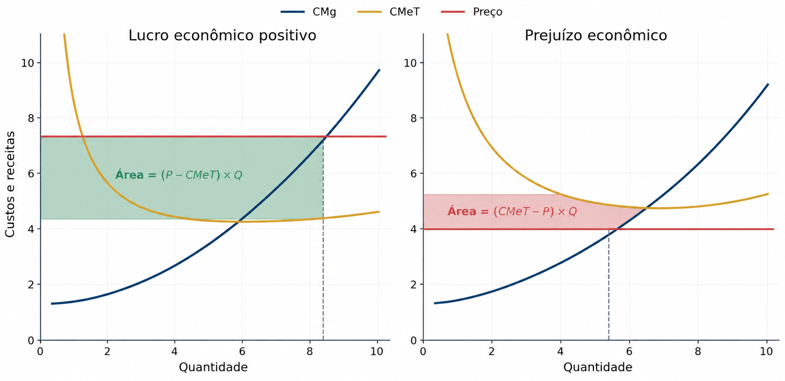
Partimos de:
\[ \pi=RT-CT \]
Multiplicando e dividindo por (Q):
\[ \pi=\left(\frac{RT}{Q}-\frac{CT}{Q}\right)Q \]
Como (RT/Q=P) e (CT/Q=CMeT):
\[ \boxed{\pi=(P-CMeT)Q} \]
No gráfico, a altura do retângulo é a diferença entre preço e custo médio total. A largura é a quantidade produzida.
Uma firma com prejuízo ainda pode operar no curto prazo se (PCMeV). Nesse caso, produzir onde (P=CMg) minimiza a perda.
Uma firma competitiva produz 100 unidades. O preço é $10, o custo médio total é $8 e o custo fixo total é $200.
Qual é o lucro?
Qual é o custo marginal na quantidade escolhida?
Qual é o custo variável médio?
Se o preço cair para $5, a firma deve paralisar no curto prazo?
Respostas:
\[ \pi=(10-8)100=\$200 \]
Como a firma maximiza o lucro, (CMg=P=$10).
\[ CMeF=200/100=2\quad\text{e}\quad CMeV=CMeT-CMeF=8-2=\$6 \]
Com preço de $5, temos (P<CMeV). A firma paralisa no curto prazo.
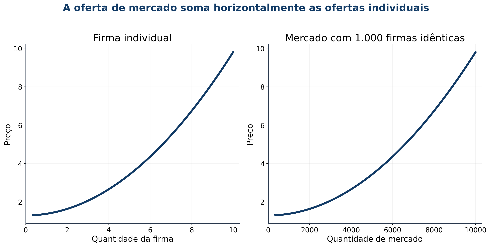
No curto prazo, o número de firmas é fixo.
Para cada preço acima do custo variável médio, cada firma oferece a quantidade em que:
\[ P=CMg \]
A oferta de mercado resulta da soma horizontal das quantidades ofertadas por todas as firmas:
\[ \boxed{Q_S^{mercado}=q_1+q_2+\cdots+q_n} \]
Se existem 1.000 firmas idênticas e cada uma oferece 100 unidades a determinado preço:
\[ Q_S^{mercado}=1.000\times100=100.000 \]
Uma mudança de preço desloca cada firma ao longo de sua curva de custo marginal e altera a quantidade total ofertada.
No longo prazo, novas firmas podem entrar e firmas existentes podem sair.
Quando (P>CMeT):
\[ \pi>0\quad\Longrightarrow\quad\text{entrada de firmas} \]
A entrada amplia a oferta de mercado, reduz o preço e comprime o lucro.
Quando (P<CMeT):
\[ \pi<0\quad\Longrightarrow\quad\text{saída de firmas} \]
A saída reduz a oferta de mercado, eleva o preço e diminui o prejuízo das firmas remanescentes.
O processo termina quando nenhuma firma deseja entrar ou sair:
\[ \boxed{\pi=0} \]
Como:
\[ \pi=(P-CMeT)Q \]
uma firma que produz apresenta lucro econômico zero quando (P=CMeT).
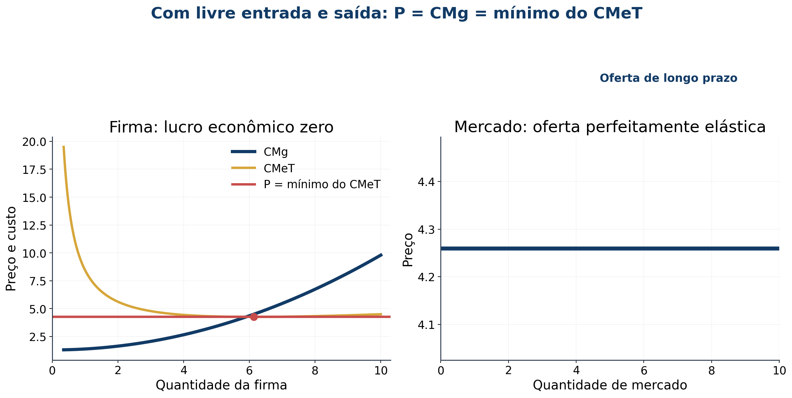
A maximização do lucro exige:
\[ P=CMg \]
A livre entrada e saída conduz a:
\[ P=CMeT \]
Portanto:
\[ \boxed{P=CMg=CMeT} \]
O custo marginal cruza o custo médio total no mínimo do CMeT. Logo, cada firma opera em sua escala eficiente.
Com firmas idênticas, mesma tecnologia e insumos disponíveis aos mesmos preços, há apenas um preço compatível com lucro econômico zero:
\[ \boxed{P=\min CMeT} \]
O número de firmas se ajusta para atender toda a demanda a esse preço. A oferta de mercado de longo prazo é horizontal e perfeitamente elástica.
Lucro econômico zero não significa que os proprietários trabalham sem remuneração.
O custo econômico inclui todos os custos de oportunidade do tempo e do capital aplicados no negócio.
Considere um agricultor que:
Seu custo de oportunidade anual inclui:
\[ 50.000+30.000=\$80.000 \]
No equilíbrio de lucro econômico zero, a receita cobre esse retorno normal e todos os demais custos.
O contador registra os custos explícitos, mas não os custos implícitos. Por isso, nesse exemplo:
\[ \text{lucro econômico}=0 \]
e
\[ \text{lucro contábil}=\$80.000 \]
Esse lucro contábil é justamente o necessário para manter o agricultor na atividade.
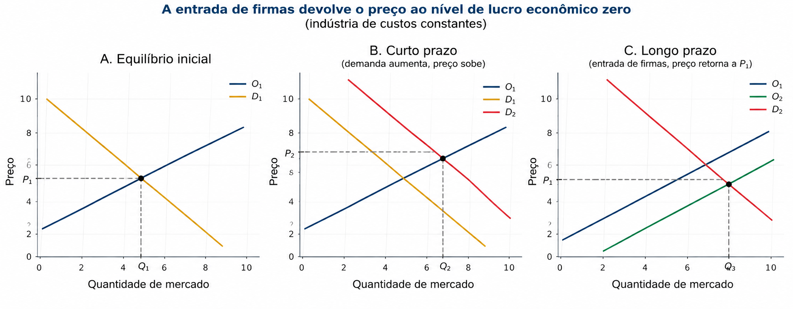
O mercado começa em equilíbrio de longo prazo no ponto A:
\[ P_1=\min CMeT\quad\text{e}\quad\pi=0 \]
Uma descoberta favorável ao consumo de leite desloca a demanda de (D_1) para (D_2).
No curto prazo, o número de firmas permanece fixo. O equilíbrio passa de A para B:
\[ P_1\rightarrow P_2\quad\text{e}\quad Q_1\rightarrow Q_2 \]
Cada firma aumenta a produção ao longo de sua curva de custo marginal.
Como o novo preço supera o custo médio total:
\[ P_2>CMeT\quad\Longrightarrow\quad\pi>0 \]
O lucro econômico positivo cria o incentivo para a entrada de firmas.
Com o passar do tempo, novas firmas entram no mercado.
A entrada aumenta a quantidade ofertada a cada preço e desloca a oferta de curto prazo de (O_1) para (O_2).
O preço cai até retornar ao mínimo do custo médio total:
\[ P_2\rightarrow P_1 \]
O mercado chega ao ponto C, um novo equilíbrio de longo prazo:
\[ P=P_1,\qquad Q=Q_3,\qquad \pi=0 \]
Cada firma volta a produzir na escala eficiente. A quantidade de mercado é maior porque agora há mais firmas.
| Horizonte | Preço | Produção por firma | Número de firmas | Quantidade de mercado |
|---|---|---|---|---|
| Equilíbrio inicial | (P_1) | Escala eficiente | Inicial | (Q_1) |
| Curto prazo | (P_2>P_1) | Maior | Fixo | (Q_2) |
| Novo longo prazo | (P_1) | Escala eficiente | Maior | (Q_3>Q_1) |
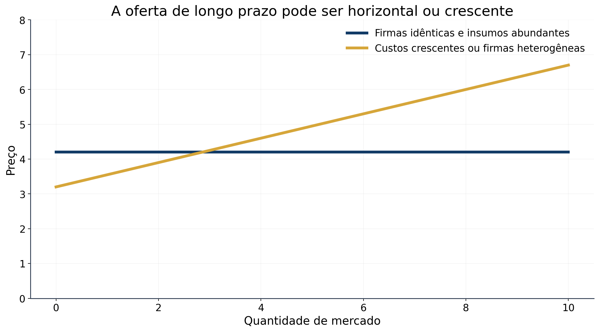
A oferta horizontal de longo prazo depende de muitas firmas potenciais com custos idênticos e insumos disponíveis sem aumento de preço.
Há duas razões para a oferta de longo prazo ser crescente.
1. Alguns recursos existem em quantidade limitada
Mais produção agrícola exige mais terra. Como a quantidade de terra é limitada, sua demanda aumenta o preço do insumo e eleva os custos de todos os produtores.
2. As firmas apresentam custos diferentes
No mercado de pintura, algumas pessoas trabalham mais rapidamente ou têm menor custo de oportunidade. Os produtores de baixo custo entram primeiro. Uma quantidade maior exige atrair firmas com custos mais altos, o que demanda preço maior.
A firma marginal, que sairia se o preço caísse, obtém lucro econômico zero. Firmas de custo inferior podem manter lucro positivo no longo prazo.
Mesmo quando crescente, a oferta de longo prazo tende a ser mais elástica que a oferta de curto prazo, pois o número de firmas consegue se ajustar.
Em um mercado competitivo com livre entrada e saída, firmas idênticas estão em equilíbrio de longo prazo.
Qual é a relação entre preço, custo marginal e custo médio total?
Em que ponto do custo médio total a firma opera?
O que ocorre se o preço subir temporariamente acima desse nível?
Por que a oferta de longo prazo pode ser crescente mesmo com livre entrada?
Resposta esperada:
\[ P=CMg=\min CMeT \]
A firma opera na escala eficiente. Um preço maior gera lucro e entrada, elevando a oferta. Recursos limitados ou diferenças de custo entre firmas podem tornar a oferta de longo prazo crescente.
Este capítulo aplicou o princípio de que pessoas racionais pensam na margem às decisões da firma competitiva.
A análise marginal produziu uma teoria para a curva de oferta:
\[ \boxed{P=RMg=CMg} \]
No curto prazo, a firma produz apenas se o preço cobrir o custo variável médio. No longo prazo, permanece apenas se o preço cobrir o custo médio total.
Quando existe livre entrada e saída, o equilíbrio de longo prazo satisfaz:
\[ \boxed{P=CMg=\min CMeT} \]
Assim, o preço pago por um bem em um mercado competitivo se aproxima do custo de produzir a unidade adicional. Com livre entrada e saída, o preço também iguala o menor custo médio total possível.
As mesmas ferramentas marginais serão úteis para estudar firmas com poder de mercado, embora suas implicações para preço e produção sejam diferentes.
12 questões: 6 de múltipla escolha e 6 de verdadeiro ou falso.
Seleção de provas da FGV e do Cebraspe, com enunciados e alternativas abreviados e adaptados para a aula. As letras das alternativas e os gabaritos originais foram preservados. Os cálculos complementares são indicados nas resoluções. As fontes oficiais estão ao final.
Múltipla escolha, questões 1 a 6: assinale uma alternativa por questão.
Questões 1 a 3: FGV, ALEGO, Analista Legislativo: Economista, 2026, caderno tipo 1.
Questão original 50. Qual decisão maximiza o lucro da firma competitiva no curto prazo?
Operar com \(P=CMg\), desde que \(P\geq CMeV\).
Fixar \(P=CMeT\), pois o lucro seria sempre nulo.
Igualar \(RMg=CMg\), considerando \(RMg\neq P\).
Produzir com \(P<CMg\) para garantir lucro.
Paralisar sempre que existirem custos fixos.
Questão original 49. Com capital fixo e produtividade marginal decrescente do trabalho, qual afirmação descreve a firma competitiva?
O \(CMg\) cai e a oferta pode decrescer.
O \(CMg\) sobe; seu trecho crescente acima do \(CMeV\) constitui a oferta.
O excedente do produtor equivale sempre à receita.
Salários maiores deslocam a isoquanta e elevam a produção.
Diluir custos fixos permite \(CMg\) decrescente nessa situação.
Questão original 43. A renda aumenta, o bem é normal e a oferta é crescente. Mantidas as demais condições, ocorre:
Expansão da demanda, com preço e quantidade maiores.
Movimento e deslocamento simultâneos da demanda.
Retração da demanda, preço menor e quantidade maior.
Nenhuma alteração da demanda.
Transformação do bem em inferior, reduzindo a demanda.
FGV, Receita Estadual do Paraná, Auditor Fiscal, 2025, tarde, tipo 1, questão original 2.
Uma firma competitiva vende a \(P=20\) e tem custo \(CT(q)=50+5q+q^2\). Qual afirmação está correta?
O lucro máximo exige \(CMeT=P\).
Maximizar o lucro exige \(CMg=CMeT\).
A firma escolhe a produção pela condição \(CMg=P\).
A concorrência elimina o lucro no curto prazo.
A maior produção possível minimiza o custo médio.
Cebraspe, Caesb, Analista de Suporte ao Negócio: Economista, 2025, questão original 34. Desafio quantitativo.
A tecnologia é \(q=5K^{2/3}L^{1/3}\). Cada unidade de capital custa \(0{,}02\); cada unidade de trabalho custa \(6\). No curto prazo, \(K=1.000\). Qual função representa o custo total?
\(CT=10+(q/600)^3\).
\(CT=20+6(q/500)^3\).
\(CT=10+[6(q/800)]^3\).
\(CT=30+4(q/160)^3\).
\(CT=20+(q/160)^3\).
Cebraspe, Caesb, Analista de Suporte ao Negócio: Economista, 2025, questão original 35. Desafio quantitativo.
Com os dados da questão anterior, a firma atua em concorrência perfeita e o preço é \(P=90\). Qual quantidade será ofertada no curto prazo?
15.000 unidades.
20.000 unidades.
25.000 unidades.
30.000 unidades.
35.000 unidades.
Apoio de cálculo acrescentado para a aula: a função de custo marginal correspondente é \(CMg(q)=18q^2/500^3\).
Julgue cada afirmação separadamente. V corresponde a Certo (C) e F corresponde a Errado (E), nomenclatura dos gabaritos do Cebraspe.
Cebraspe, FUB, Auditor, 2025, item original 108.
Muitos agentes, produto homogêneo e livre entrada caracterizam um mercado competitivo no qual nenhum participante isolado tem poder para determinar preços ou a quantidade total negociada.
( ) V / Certo ( ) F / Errado
Cebraspe, FUB, Economista, 2018, item original 57.
A curva de demanda enfrentada por uma firma perfeitamente competitiva apresenta inclinação negativa.
( ) V / Certo ( ) F / Errado
Cebraspe, FUB, Economista, 2018, item original 54.
O crescimento do custo marginal implica, necessariamente, que os custos médios total e variável também estejam aumentando.
( ) V / Certo ( ) F / Errado
Cebraspe, FUB, Economista, 2018, item original 53.
A produtividade marginal decrescente de um fator basta para concluir que a tecnologia apresenta retornos decrescentes de escala.
( ) V / Certo ( ) F / Errado
Cebraspe, FUB, Economista, 2018, item original 55.
No longo prazo, permanecer no mercado é uma decisão ótima quando o preço cobre pelo menos o custo médio de produção.
( ) V / Certo ( ) F / Errado
Cebraspe, Funpresp-EXE, Analista de Previdência Complementar: Gestão de Investimentos e Riscos de Investimentos, 2025, item original 60.
Em concorrência perfeita, o equilíbrio de longo prazo não proporciona lucro econômico positivo às firmas.
( ) V / Certo ( ) F / Errado
| Questão | Resposta | Questão | Resposta |
|---|---|---|---|
| 1 | A | 7 | V / C |
| 2 | B | 8 | F / E |
| 3 | A | 9 | F / E |
| 4 | C | 10 | F / E |
| 5 | B | 11 | V / C |
| 6 | C | 12 | V / C |
1. Alternativa A. A firma aceita o preço de mercado, de modo que \(RMg=P\). Se estiver produzindo, ajusta a quantidade até \(P=CMg\), no trecho crescente do custo marginal. A produção só compensa quando a receita cobre o custo variável:
\[ RT\geq CV \quad\Longleftrightarrow\quad PQ\geq CV \quad\Longleftrightarrow\quad P\geq CMeV. \]
Se \(P<CMeV\) na melhor alternativa de produção positiva, paralisar evita uma perda adicional. No ponto de fechamento, \(P=\min CMeV\), a firma fica indiferente entre produzir e paralisar. Os custos fixos permanecem nos dois casos.
B confunde a decisão de curto prazo com o equilíbrio de longo prazo. C contraria \(RMg=P\). D indica que a última unidade custa mais do que rende. E trata a existência de custo fixo como motivo suficiente para fechar.
Aplicação numérica complementar, elaborada para a aula: suponha que, na quantidade ótima positiva, \(RT=80\), \(CV=60\) e \(CF=50\).
\[ \pi_{\text{produzir}}=80-60-50=-30 \qquad \pi_{\text{paralisar}}=-50. \]
Produzir reduz o prejuízo em 20. Ter prejuízo não basta para justificar a paralisação.
2. Alternativa B. Mantido o salário, a queda da produtividade marginal faz cada unidade adicional exigir mais trabalho. Por isso, aumenta seu custo. Quando apenas o trabalho varia, podemos escrever:
\[ CMg=\frac{w}{PMg_L}. \]
A firma oferece a quantidade em que \(P=CMg\), desde que cubra os custos variáveis. O trecho relevante de sua oferta acompanha, portanto, o \(CMg\) crescente acima do mínimo do \(CMeV\).
A inverte a relação entre produtividade e custo. C ignora os custos variáveis no cálculo do excedente do produtor. D confunde preço do insumo com tecnologia. E confunde a redução do custo fixo médio com a determinação do custo marginal.
3. Alternativa A. Como o bem é normal, renda maior aumenta a quantidade que os consumidores desejam comprar a cada preço. A curva de demanda se movimenta para a direita. Com a oferta crescente mantida, o novo equilíbrio apresenta preço e quantidade maiores.
O aumento do preço gera um movimento ao longo da oferta. B mistura esse ajuste com o deslocamento da demanda. C e E invertem o efeito da renda sobre um bem normal. D desconsidera um determinante da demanda.
Ligação com o longo prazo: se houver livre entrada, firmas idênticas e custos dos insumos constantes, lucros positivos atraem novas firmas. A oferta se expande e o preço pode retornar ao mínimo do custo médio total. Essa é uma extensão do raciocínio da aula, não uma condição adicional da questão original.
4. Alternativa C. A firma recebe o preço por cada unidade adicional, portanto sua receita marginal é 20. O custo marginal é \(CMg=5+2q\), e a condição de escolha é:
\[ 5+2q=20 \quad\Rightarrow\quad q^*=7{,}5. \]
Cálculo complementar para a aula: nessa quantidade,
\[ RT=20\times7{,}5=150, \qquad CT=50+37{,}5+56{,}25=143{,}75, \]
\[ \pi=150-143{,}75=6{,}25. \]
Há lucro econômico positivo no curto prazo. A confunde lucro máximo com lucro nulo; B identifica o mínimo do custo médio; D generaliza para o curto prazo um resultado do equilíbrio de longo prazo; E ignora o custo das unidades adicionais. Como \(CMg\) cresce e \(P>CMeV=12{,}5\), produzir é a melhor decisão.
5. Alternativa B. O capital fixo gera \(CF=0{,}02\times1.000=20\). Substituindo o capital na função de produção:
\[ q=5\times1.000^{2/3}L^{1/3}=500L^{1/3} \quad\Rightarrow\quad L=(q/500)^3. \]
O custo variável é a despesa com trabalho, \(CV=6L\). Logo,
\[ CT=CF+CV=20+6(q/500)^3. \]
As opções A, C e D não preservam o custo fixo de 20; E não preserva a relação entre trabalho necessário e produção. A questão mostra como a tecnologia determina os custos usados na decisão de oferta.
6. Alternativa C. Usando \(P=CMg\) no trecho crescente:
\[ 90=\frac{18q^2}{500^3} \quad\Rightarrow\quad q^2=\frac{90\times125.000.000}{18}=625.000.000 \quad\Rightarrow\quad q^*=25.000. \]
Verificação complementar de viabilidade:
\[ CMeV=\frac{6(q/500)^3}{q}=\frac{6q^2}{500^3}. \]
Em \(q=25.000\), o custo variável médio é 30. Como \(P=90>30\), a receita cobre os custos variáveis. A e B ainda permitem expandir a produção com \(P>CMg\); D e E incluem unidades cujo custo marginal supera o preço.
7. Verdadeiro / Certo. Cada agente representa uma parcela pequena do mercado e toma o preço como dado. A firma escolhe sua própria quantidade, mas não controla o resultado agregado. Produtos homogêneos e livre entrada completam as características descritas. Não se deve interpretar o item como uma proibição de a firma decidir quanto produzir.
8. Falso / Errado. A demanda da firma individual é horizontal ao preço de mercado. Uma unidade extra pode ser vendida pelo mesmo preço, portanto \(P=RMe=RMg\). A curva de demanda do mercado é que normalmente apresenta inclinação negativa. A afirmação confunde esses dois níveis de análise.
9. Falso / Errado. Para saber se uma média aumenta, é preciso comparar o custo da unidade adicional com a média atual. Enquanto \(CMg<CMeT\), o custo médio total cai, mesmo que o custo marginal já esteja subindo. A mesma lógica vale para \(CMeV\). O custo marginal cruza cada curva de custo médio em seu mínimo, no formato usual em U.
Exemplo complementar: se a média é 10, uma unidade adicional com custo 8 reduz essa média, ainda que seu custo seja maior que o da unidade anterior, que custou 7.
10. Falso / Errado. Produtividade marginal analisa a variação de um fator, mantendo os demais fixos. Retornos de escala analisam o aumento proporcional de todos os fatores. Uma coisa não determina a outra.
Contraexemplo complementar: em \(q=\sqrt{KL}\), aumentar apenas \(L\) com \(K\) fixo gera incrementos cada vez menores de produção. Entretanto,
\[ f(2K,2L)=\sqrt{4KL}=2\sqrt{KL}=2f(K,L), \]
portanto os retornos de escala são constantes.
11. Verdadeiro / Certo. No longo prazo, a firma deve cobrir todos os custos econômicos. Avaliada a melhor quantidade de produção, \(P\geq CMeT\) equivale a receita pelo menos igual ao custo total. Se \(P<CMeT\) em qualquer alternativa viável, sair evita prejuízos persistentes. Na igualdade, o lucro econômico é zero e permanecer é compatível com a remuneração dos fatores, inclusive seus custos de oportunidade.
12. Verdadeiro / Certo. No modelo competitivo com livre entrada e saída, lucros positivos atraem firmas, ampliam a oferta e pressionam o preço para baixo; prejuízos provocam saída e o ajuste contrário. No equilíbrio de longo prazo do modelo de firmas idênticas:
\[ P=CMg=\min CMeT \quad\text{e}\quad \pi_{\text{econômico}}=0. \]
Lucro econômico nulo não significa receita nula ou ausência de remuneração do empresário. O custo econômico inclui a melhor alternativa de uso de seu trabalho e de seu capital. Por isso, o lucro contábil pode ser positivo.
Prova oficial da FGV, questões 43, 49 e 50.
Gabarito definitivo da FGV, página 7: 43-A, 49-B e 50-A.
FGV, Receita Estadual do Paraná, Auditor Fiscal, tarde, tipo 1, questão 2. Gabarito definitivo retificado: 2-C, tipo 1, turno da tarde.
Cebraspe, Caesb, Economista, questões 34 e 35, prova com justificativas. Gabarito definitivo: 34-B e 35-C, aplicação em 22/06/2025.
Cebraspe, FUB, Auditor, 2025, item 108. Gabarito definitivo: 108-C.
Cebraspe, FUB, Economista, 2018, itens 53, 54, 55 e 57. Gabarito definitivo: 53-E, 54-E, 55-C e 57-E.
Cebraspe, Funpresp-EXE, cargo 5, item 60. Gabarito definitivo: 60-C, aplicação em 09/02/2025.
Referência teórica: Mankiw, Princípios de Economia, 8ª ed., capítulo 14, páginas 267 a 286 do livro, correspondentes às páginas 296 a 315 do PDF fornecido.